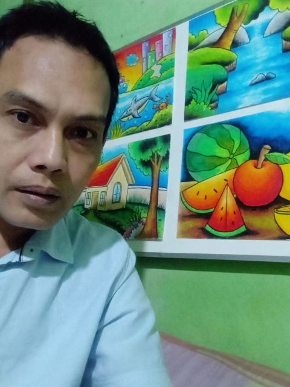

Portofolio Seni
RusianArt
Pelukis & Seniman
Menggambar adalah cara saya bercerita — dari sketsa pensil karakter, ilusi 3D yang "keluar" dari kertas, sampai lettering penuh warna. Dulu sebagai art crew bagian artistik stasiun TV swasta, kini karya-karya lahir dari meja kecil di rumah.
Tarik kertasnya untuk memutar

Tentang Rusian
Halo, saya Rusian. Sejak kecil, pensil sudah jadi sahabat saya — dari coretan di buku tulis sampai sketsa rinci di atas kertas. Bagi saya, menggambar bukan sekadar hobi, melainkan cara menikmati dunia.
Bertahun-tahun saya bekerja sebagai art crew bagian artistik di sebuah stasiun TV swasta — menyiapkan elemen-elemen visual yang menghidupkan tayangan. Di sanalah selera kreatif saya terasah: setiap warna, bentuk, dan komposisi harus bisa "berbicara".
Kini saya melukis dan membuat karya dari rumah. Spesialisasi saya: sketsa pensil karakter, ilusi 3D di atas kertas, dan lettering penuh warna. Saya terbuka untuk pesanan, kolaborasi, maupun pameran.
- Pensil 2B & spidol
- Ilusi 3D
- Art crew TV
- Terima pesanan
Galeri Karya
Digambar tangan satu per satu — bukan hasil mesin. Klik karyanya untuk melihat lebih dekat.
Belum ada karya di kategori ini.